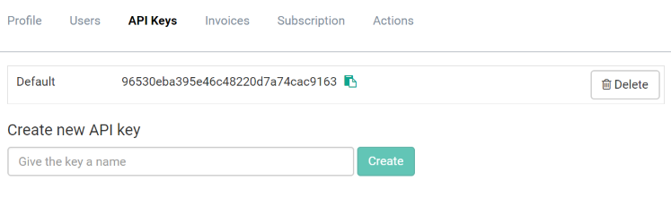

Using the REST API
Under the hood, everything related to communicating with elmah.io happens through our REST API. In this article, we will present the possibilities using the API in a use case driven approach. For a details reference of the various endpoints, visit the API V3 documentation or the API V2 documentation.
Security
Security in V3 of our API is implemented using API keys (Where is my API key?). When creating a new organization, a default API key is automatically created:

You can create new keys and revoke an existing key, if you suspect that the key has been compromised. The API key acts as a secret and should not be available to people outside your team/organization.
All requests to the elmah.io API needs the API key as either a HTTP header or query string parameter named api_key like this:
GET https://api.elmah.io/v3/messages/LOG_ID?api_key=MY_API_KEY
API V2 doesn't require (or support) API keys, why someone could extract information from your log using the log ID only. The log ID is used to tell elmah.io which log to put a new error into, when logged from your application (Where is my log ID?). As long as V2 of our API is available, the log ID needs to be kept secret as well.
Messages
Creating messages
Before doing anything, we will need some messages to play with. The Create Message endpoint does just that. To create a simple message, POST to:
# API V3
POST https://api.elmah.io/v3/messages/LOG_ID
# API V2
POST https://elmah.io/api/v2/messages?logid=LOG_ID
with a JSON body:
{
"title": "This is a test message"
}
(replace LOG_ID with your log ID):
The title field is the only required field on a message, but fields for specifying severity, timestamp etc. are there. For more information, check out the documentation.
If everything where successful, the API returns a HTTP status code of 201 and a location to where to fetch the new message. If the endpoint fails, the response will contain a description of what went wrong. Forgetting to set Content-Length, Content-Type and similar, will result in an invalid request.
Getting a message
In the example above, the API returned the URL for getting the newly created message:
# API V3
GET https://api.elmah.io/v3/messages/LOG_ID/81C7C282C9FDAEA3
# API V2
GET https://elmah.io/api/v2/messages?id=81C7C282C9FDAEA3&logid=LOG_ID
By making a GET request to this URL, we get back the message details:
{
"id": "99CDEA3D6A631F09",
"title": "This is a test message",
"dateTime": "2016-07-03T14:25:46.087857Z",
"severity": "Information"
}
As shown in the returned body, elmah.io automatically inserted some missing fields like a timestamp and a severity. If no severity is specified during creating, a message is threated as information.
Searching messages
For the demo, we have inserted a couple of additional messages, which leads us to the next endpoint: searching messages. The search endpoint shares the root path with the get message endpoint, but only take a log ID. The simplest possible configuration, queries the API for a list of the 15 most recent messages by calling:
# API V3
GET https://api.elmah.io/v3/messages/LOG_ID
# API V2
GET https://elmah.io/api/v2/messages?logid=LOG_ID
The response body looks like this:
{
"messages": [
{
"id": "81C7C282C9FDAEA3",
"title": "This is another test message",
"dateTime": "2016-07-03T14:31:45.053851Z",
"severity": "Information"
},
{
"id": "99CDEA3D6A631F09",
"title": "This is a test message",
"dateTime": "2016-07-03T14:25:46.087857Z",
"severity": "Information"
},
...
],
"total": 42
}
For simplicity, the response has been simplified by not showing all of the results. The important thing to notice here, is the list of messages and the total count. messages contain 15 messages, which is the default page size in the search endpoint. To increase the number of returned messages, set the pagesize parameter in the URL (max 100 messages per request). The total count tells you, if there are more messages matching your search. To select messages from the next page, use the pageindex parameter.
Returning all messages may be fine, but being able to search by terms is even more fun. To search, use the query, from and to parameters as shown here:
# API V3
GET https://api.elmah.io/v3/messages/LOG_ID?query=another
# API V2
GET https://elmah.io/api/v2/messages?logid=LOG_ID?query=another
Searching for another will return the following response:
{
"messages": [
{
"id": "81C7C282C9FDAEA3",
"title": "This is another test message",
"dateTime": "2016-07-03T14:25:46.087857Z",
"severity": "Information"
}
],
"total": 1
}
Now only 81C7C282C9FDAEA3 shows up, since that message contains the text another in the title field. Like specifying the query parameter, you can limit the number of messages using the from, to and pagesize parameters.
Deleting a message
When fixing the bug causing an error logged at elmah.io, you may want to delete the error. Deleting a single error is as easy as fetching it. Create a DELETE request to the errors unique URL:
# API V3
DELETE https://api.elmah.io/v3/messages/LOG_ID/81C7C282C9FDAEA3
# API V2
DELETE https://elmah.io/api/v2/messages?id=81C7C282C9FDAEA3&logid=LOG_ID
When successfully deleted, the delete endpoint returns a HTTP status code of 200.
Deleting messages
Deleting messages one by one can be tedious work. To delete multiple errors, you can utilize the Delete Messages endpoint by creating a DELETE request to:
# API V3
DELETE https://api.elmah.io/v3/messages/LOG_ID
# API V2
DELETE https://elmah.io/api/v2/messages?logid=LOG_ID
The request must contain a body with at least a query:
{
"query": "test"
}
An option for deleting messages by date range is available as well. Check out the API documentation for details.
Hiding a message
Depending on your use case, you may want to hide a message, rather than deleting it. Hidden messages are not shown as default through neither the UI, nor the REST API. But you will be able to search for them by enabling the Hidden checkbox on the UI.
To hide a message, use the _hide endpoints like this:
# API V3
POST https://api.elmah.io/v3/messages/LOG_ID/99CDEA3D6A631F09/_hide
# API V2
POST https://elmah.io/api/v2/messages/_hide?id=99CDEA3D6A631F09&logid=LOG_ID
If successful, the endpoint returns a HTTP status code of 200.
This article was brought to you by the elmah.io team. elmah.io is the best error management system for .NET web applications. We monitor your website, alert you when errors start happening and help you fix errors fast.
See how we can help you monitor your website for crashes Monitor your website